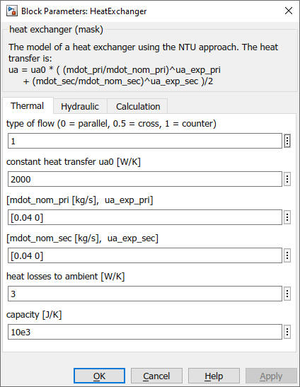

HeatExchanger
Path: CARNOT/Source/Heat_Exchanger
Purpose:
Calculates the output of the hot and cold fluid of a heat exchanger.
Description:
The heat exchanger is characterised by the number of transfer units (NTU).
Input temperatures are delayed by the heat capacity of the exchanger.
Parallel, cross and counter flow are possible.
Thot_out = Thot_in - psi * (Thot_in - Tcold_in)
Tcold_out = Tcold_in - Whot/Wcold * (Thot_in - Thot_out)
ua = ua0 * ( (mdothot/mdot_nomhot)^ua_exphot +
(mdotcold/mdot_nomcold)^ua_expcold )
NTU = ua/Whot
psi1 = exp(-NTU*(1 + min(w1,w2)/max(w1,w2)*(1 - 2*flow)))
psi = (1-psi1) / (1+min(w1,w2)/max(w1,w2)*(1-flow*(1+psi1)))
The delay for the inlet temperature is:
(0.5*cap)*dT/dt = (Tin - T) - UAloss * (Tamb - T)
with
| Symbol | Used for | Unit |
| cap | mass * heat capacity | J/K |
| flow | type of flow (0=parallel, 0.5=cross, 1=counter) | |
| psi | dimensionless temperature change | - |
| T | temperature | °C |
| Tamb | ambient temperature for thermal losses | °C |
| UAloss | thermaol loss coefficient | W/K |
| Whot | mass flow * heat capacity hot fluid | W/K |
| Wcold | mass flow * heat capacity cold fluid | W/K |
Input:
| Tamb | : | ambient temperature for thermal losses °C |
| THB_pri | : | entering primary (hot) Thermo Hydraulic Bus |
| THB_sec | : | entering secondary (cold) Thermo Hydraulic Bus |
Output:
| THBpri | : | leaving primary (hot) Thermo Hydraulic Bus |
| THBsec | : | leaving secondary (cold) Thermo Hydraulic Bus |
Parameters and Dialog Box:

Examples:
Open the example explorer from the Matlab command window
ExampleBrowser
or load the examples via the CARNOT library.
Literature:
Renz, U.: Kalorische Apparate, Vorlesungsskript zur gleichnamigen
Vorlesung an der RWTH Aachen, Aachen, Lehrstuhl fiir Warmeuebertragung
und Klimatechnik, 1987
NOTE:
Be carefull when using the model for crossflow heat exchangers.
It is correct for NTU <= 2. For NTU = 4 the error is about 5 %.
Characteristics:
| Direct Feedthrough | : | Yes |
| Sample Time | : | Inherited from driving block |
| Vectorized | : | No |